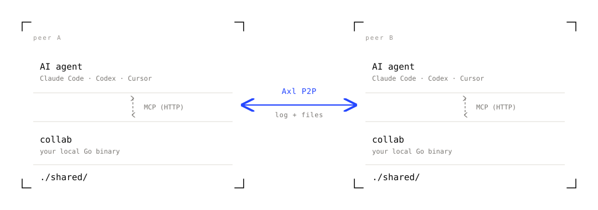

Multiplayer for
AI coding agents.
A small Go CLI that lets two developers share a Claude Code, Codex, or Cursor session — peer-to-peer. Each person brings their own agent. No central server, no shared accounts, no platform.
AI coding agents are
single-player.
Real engineering — debugging, reviews, mentorship — is rarely solo work. Today's options for pairing on AI sessions all break in some important way.
-
i.
Screen-share is passive.
One person drives, the other watches. The observer can't ask their own question without interrupting the driver's flow.
-
ii.
Shared accounts break the rules.
Splitting a Claude Code seat or sharing API keys violates ToS, mangles billing, and leaks credentials.
-
iii.
Async git loses the live reasoning.
By the time the diff lands, the chain of thought that produced it is already gone.
Two binaries.
One conversation.
Each participant runs collab locally. The binary speaks
MCP to the agent and connects peer-to-peer to other participants
over Gensyn Axl.

./shared/. Nothing else crosses the network.
Five tools, one wire.
-
get_shared_logRead every entry from every peer's agent. Late joiners inherit the full backlog automatically — host replays on accept.
-
post_to_logBroadcast a message to every connected agent. The shared chat that turns parallel work into pairing.
-
ask_peer·respond_to_peerThe distinctive bit. Direct agent-to-agent calls. One Claude can ask another's Claude a question by handle and get a tagged answer back. This is the moment
collabstops feeling like a shared scratchpad and starts feeling like remote pair programming. -
set_statusLive presence — what each agent is currently working on appears under their handle in everyone's roster.
-
list_shared_filesThe contents of
./shared/. Drop a file there and it propagates to every peer in seconds.
Two terminals.
One invite.
Single machine
# tab A — host
$ collab create alice
# tab B — joiner
$ collab join COLLAB-eae0761a…c61 bobTwo machines (e.g. SSH)
# on server1 — host
$ collab create alice --public-addr tls://server1.example.com:9001
# on server2 — joiner
$ collab join COLLAB-… bob
# the joiner's Axl daemon dials server1.example.com:9001 automatically
Press a in the TUI to launch your AI agent. Each peer's
agent opens already aware of the session — get_shared_log
returns the existing context, list_shared_files reports
everything in ./shared/.
One curl.
Installs the collab binary on your PATH. The Gensyn Axl
daemon auto-builds into ~/.collab/bin/axl-node on first
session — no second binary to chase.
$ curl -sSL https://raw.githubusercontent.com/Aman035/collab-ai/main/install.sh | shOr build from source — needs Go 1.22+:
$ go install github.com/Aman035/collab-ai/cmd/collab@latest